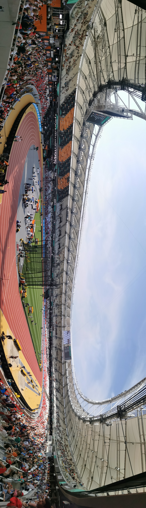

O calendário internacional do atletismo ganha neste ano uma competição criada para ocupar um espaço diferente de tudo o que já existe na modalidade. O World Athletics Ultimate Championship será realizado entre 11 e 13 de setembro, em Budapeste, na Hungria, reunindo alguns dos principais nomes das pistas e dos campos em apenas três sessões de competição.
A proposta é simples na concepção e agressiva no formato: colocar frente a frente campeões olímpicos, campeões mundiais, vencedores da Diamond League e atletas de destaque no ranking mundial para decidir os chamados “Ultimate Champions”. Diferentemente de um Campeonato Mundial tradicional, o evento praticamente elimina as etapas preliminares e concentra semifinais e finais em três noites.
A edição de Budapeste será a primeira da história e inaugura uma competição prevista para acontecer a cada dois anos. Com isso, a World Athletics passa a ter um grande campeonato global também nos anos em que não há Jogos Olímpicos ou Mundial ao ar livre, criando uma espécie de encerramento de luxo para a temporada internacional.
O formato
O Ultimate Championship foi anunciado pela World Athletics como uma nova competição global destinada a reunir a elite do atletismo em confrontos diretos. A estreia acontece em Budapeste, cidade que recebeu o Campeonato Mundial de Atletismo de 2023.
O torneio terá 28 provas: 26 individuais e dois revezamentos mistos. São 13 eventos individuais masculinos e 13 femininos, divididos entre corridas, saltos e lançamentos. Com um número restrito de participantes em cada disputa e praticamente nenhuma margem para recuperação, a competição foi desenhada para ser mais curta e intensa do que os grandes campeonatos tradicionais.
As provas individuais previstas são:
- 100 metros masculino e feminino
- 200 metros masculino e feminino
- 400 metros masculino e feminino
- 800 metros masculino e feminino
- 1500 metros masculino e feminino
- 5000 metros masculino e feminino
- 100 metros com barreiras feminino
- 110 metros com barreiras masculino
- 400 metros com barreiras masculino e feminino
- Salto em altura masculino e feminino
- Salto com vara masculino e feminino
- Salto em distância masculino e feminino
- Salto triplo feminino
- Lançamento do martelo masculino
- Lançamento do dardo masculino e feminino
- Revezamento misto 4x100 metros
- Revezamento misto 4x400 metros
Como funciona a classificação para o Ultimate Championship
Uma das principais diferenças do torneio está no sistema de acesso. Não se trata de uma competição aberta com eliminatórias nacionais convencionais, mas de um campeonato baseado no desempenho dos melhores atletas do ciclo recente.
Os campeões olímpicos de Paris 2024 nas provas incluídas no programa conquistaram condição automática para receber convite. O mesmo se aplica aos campeões mundiais de Tóquio 2025 e aos vencedores das provas correspondentes na final da Diamond League de 2026.
As vagas restantes são preenchidas levando em consideração o ranking mundial dentro do período classificatório determinado pela World Athletics. A entidade também criou a possibilidade de convites excepcionais. Outro detalhe importante é que não existe limite convencional de atletas de uma mesma nacionalidade por prova, desde que eles cumpram os critérios estabelecidos e sejam convidados.
Esse modelo abre caminho para confrontos que normalmente só acontecem em Mundiais ou Jogos Olímpicos, mas com um campo ainda mais concentrado.
Sem eliminatórias longas: cada corrida vale muito
O conceito do Ultimate Championship passa pela redução do número de fases.
Nas provas de 100 m, 200 m, 400 m, 800 m, barreiras curtas e 400 m com barreiras, a programação prevê duas semifinais com oito atletas cada. Os quatro primeiros de cada bateria avançam para a decisão.
Já 1500 m, 5000 m e os dois revezamentos serão disputados diretamente como finais.
Nos eventos de campo, todas as competições também começam já em formato de final. Saltos horizontais e lançamentos utilizam um sistema reduzido: os oito competidores fazem inicialmente duas tentativas; os seis melhores continuam para a terceira rodada e apenas os quatro primeiros ganham uma quarta tentativa.
É um desenho que aumenta o peso de cada execução. Uma tentativa ruim pode custar uma posição decisiva muito mais rapidamente do que em um Mundial tradicional.
World Athletics também aposta em regras diferentes
O Ultimate Championship também serve como laboratório para mudanças na apresentação do atletismo.
Nos 200 metros, por exemplo, a World Athletics anunciou um sistema em que os atletas poderão escolher bateria e raia para a semifinal de acordo com a ordem definida pelo ranking. A escolha será transformada em parte da apresentação do evento.
Nos saltos verticais, a proposta também estabelece que não haverá empate pelo primeiro lugar. A competição foi estruturada para terminar obrigatoriamente com um campeão único, reforçando o conceito de “Ultimate Champion”.
A própria cerimônia de premiação terá uma identidade diferente. Em vez das medalhas tradicionais de ouro, prata e bronze como principal símbolo do torneio, os vencedores receberão um troféu específico do Ultimate Championship. A World Athletics apresentou a mudança como parte do esforço para criar uma identidade própria para a nova competição.
Premiação estabelece novo patamar
Outro ponto central do World Athletics Ultimate Championship é o dinheiro envolvido.
A entidade estabeleceu uma premiação total de US$ 10 milhões, apresentada como a maior bolsa já oferecida em um único evento de pista e campo.
Nas provas individuais, o campeão recebe US$ 150 mil. O segundo colocado fica com US$ 75 mil, enquanto o terceiro recebe US$ 40 mil. A premiação continua para as posições seguintes.
Nos revezamentos, a equipe vencedora recebe US$ 80 mil. Todas as equipes classificadas para a final também têm premiações estabelecidas conforme a colocação.
O valor ajuda a explicar por que a competição pretende ir além de ser simplesmente outro encontro do calendário. A intenção é transformar setembro em um período de alta relevância esportiva e comercial mesmo depois das grandes etapas da temporada.
Alison dos Santos no centro da competição
Para o público brasileiro, uma das disputas de maior interesse está nos 400 metros com barreiras.
Píu chega ao período do Ultimate Championship em uma condição especial. Em 27 de agosto de 2026, o brasileiro marcou 45s80 em Zurique, resultado apresentado pela World Athletics como recorde mundial pendente de ratificação. A marca aumentou ainda mais a expectativa para uma prova que reúne alguns dos grandes nomes da geração. O brasileiro também reforçou seu protagonismo internacional ao conquistar o Troféu de Diamante na Final da Diamond League de 2026, em Bruxelas, resultado que ajuda a dimensionar o nível com que chega ao novo campeonato.
A própria World Athletics colocou Alison dos Santos entre os protagonistas esperados para o confronto de Budapeste, em um cenário que também envolve estrelas internacionais dos 400 m com barreiras. O evento, portanto, oferece ao brasileiro outra oportunidade de disputar um título global em um formato completamente novo.
As principais estrelas do Ultimate Championship
O nível do torneio pode ser entendido pelos campeões olímpicos que garantiram qualificação automática nas respectivas provas.
Entre os principais nomes já classificados ou elegíveis estão campeões olímpicos de diferentes provas:
- Noah Lyles — 100 m masculino
- Julien Alfred — 100 m feminino
- Marileidy Paulino — 400 m feminino
- Emmanuel Wanyonyi — 800 m masculino
- Faith Kipyegon — 1500 m feminino
- Jakob Ingebrigtsen — 5000 m masculino
- Masai Russell — 100 m com barreiras feminino
- Mondo Duplantis — salto com vara masculino
- Yaroslava Mahuchikh — salto em altura feminino
- Tara Davis-Woodhall — salto em distância feminino
- Miltiadis Tentoglou — salto em distância masculino
A presença desses atletas ajuda a dimensionar o nível técnico projetado para Budapeste, reunindo campeões olímpicos das provas de velocidade, meio-fundo, fundo, barreiras e saltos em um formato concentrado de competição.
Isso não significa que o campeonato será apenas uma repetição dos Jogos de Paris ou do Mundial de Tóquio. A presença de campeões da Diamond League, atletas classificados pelo ranking e convidados adiciona confrontos que refletem também o momento esportivo de 2026.
Datas e horários das provas
O World Athletics Ultimate Championship será disputado entre 11 e 13 de setembro de 2026 no National Athletics Centre, em Budapeste.
A programação geral fica assim:
- 11 de setembro, sexta-feira — das 14h às 17h, horário de Brasília
- 12 de setembro, sábado — das 13h às 16h, horário de Brasília
- 13 de setembro, domingo — das 13h às 16h, horário de Brasília
A World Athletics programou três sessões de aproximadamente três horas, concentrando semifinais e finais.
Na sexta-feira, o programa reúne provas de pista e campo, com semifinais e finais importantes:
- Revezamento misto 4x100 m
- Final masculina do lançamento do martelo
- Semifinais dos 400 m com barreiras
- Salto em altura feminino
- 5000 m masculino
- Salto com vara masculino
- Salto em distância feminino
- Final dos 100 m com barreiras feminino
- Final dos 110 m com barreiras masculino
No sábado, o destaque fica para algumas das provas mais aguardadas do campeonato:
- Finais dos 100 m masculino e feminino
- 400 m
- 800 m feminino
- 1500 m feminino
- Salto com vara feminino
- Salto em distância masculino
- Lançamento do dardo feminino
O domingo encerra o Ultimate Championship com uma sequência de decisões:
- 200 m masculino e feminino
- 400 m com barreiras masculino
- 5000 m feminino
- 800 m masculino
- 1500 m masculino
- Salto em altura masculino
- Salto triplo feminino
- Lançamento do dardo masculino
- Revezamento misto 4x400 m
A ordem oficial está sujeita a eventuais ajustes da organização.
Onde assistir ao World Athletics Ultimate Championship
A transmissão está confirmada no Brasil pela XSports. A emissora adquiriu os direitos do torneio para TV aberta e também para seu canal no YouTube, garantindo ao público brasileiro acesso à edição inaugural de Budapeste.
Budapeste volta ao centro do atletismo mundial
O local escolhido reforça a estratégia da World Athletics de começar o projeto em um palco já testado.
O National Athletics Centre foi construído para o Mundial de 2023 e voltou a ser preparado para receber uma grande competição internacional. Para o Ultimate Championship, a organização anunciou a instalação de arquibancadas temporárias, elevando a capacidade prevista para até 21 mil espectadores por sessão.
Mais importante do que a capacidade do estádio, porém, será o teste esportivo representado por Budapeste. O Ultimate Championship tenta resolver uma questão antiga do atletismo: como transformar o encerramento da temporada em um evento global com peso próprio, narrativa simples e presença concentrada das maiores estrelas.
Em vez de uma competição extensa, o modelo aposta em três noites, pouca margem para erro e finais praticamente o tempo todo. Se conseguir se consolidar, o World Athletics Ultimate Championship poderá se tornar uma referência permanente do calendário: não como substituto dos Jogos Olímpicos, do Mundial ou da Diamond League, mas como uma nova disputa pela supremacia entre os melhores atletas de cada temporada.